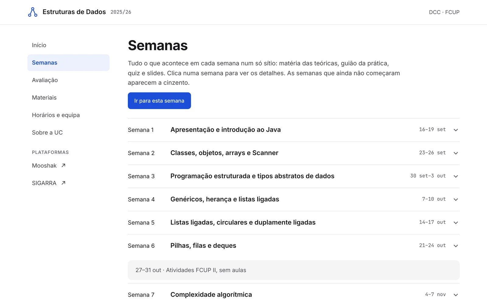
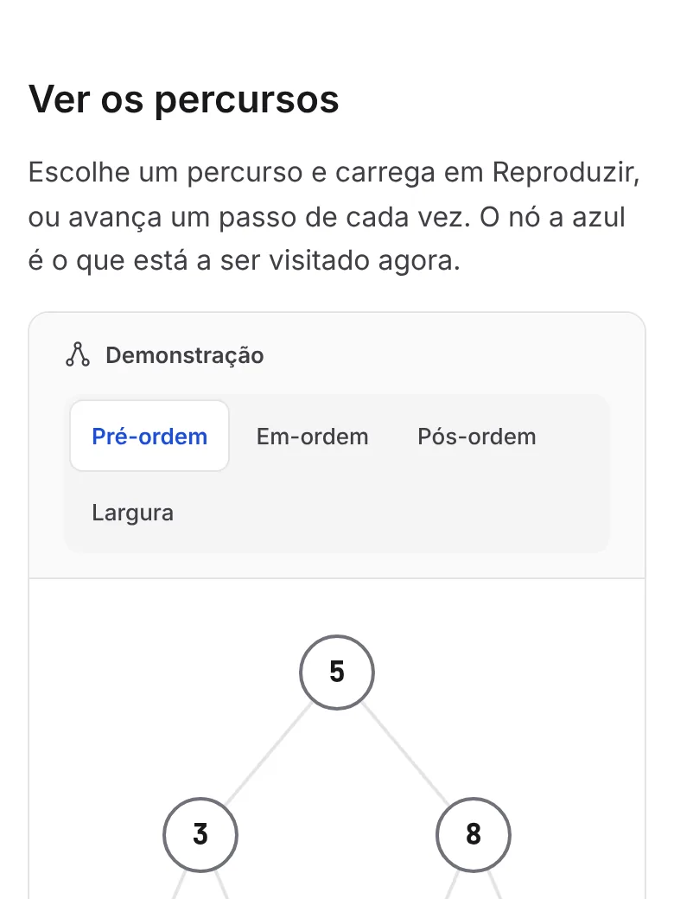
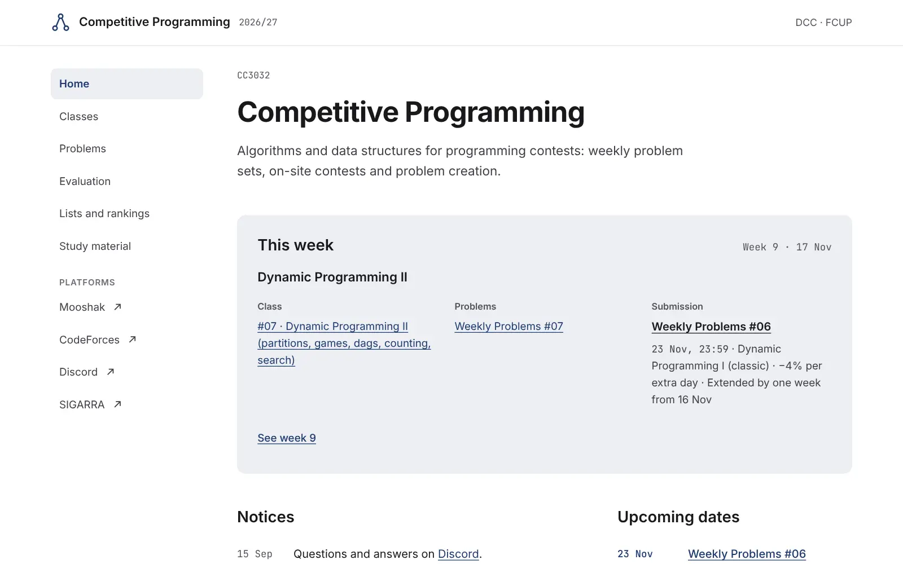

Estático · acessível · sem compilação
O site da sua cadeira, em HTML simples, de ano para ano.
Componentes e estilos para sites de unidades curriculares. O conteúdo fica em HTML, as datas num único course.js, e um ano novo é copiar a pasta.
Feito para durar mais do que um semestre
Seis decisões que fazem o site sobreviver à passagem de ano, de professor e de servidor.
-
Estático
Só HTML, CSS e JavaScript. Funciona no
~/public_htmldo departamento, no GitHub Pages ou aberto do disco. -
Conteúdo em HTML
HTML normal com alguns elementos próprios, como
<uc-week>. Sem JavaScript, o conteúdo continua lá. -
Um
course.jsSemestre, equipa, prazos e avisos num só ficheiro. As semanas e a semana atual calculam-se a partir dele.
-
Copiar a pasta
Cada ano letivo é uma pasta. Para o seguinte, copia-se, muda-se o início do semestre e os prazos, e o resto acompanha.
-
Bilingue
Português, inglês ou ambos: na mesma página com
lang, ou num ficheiro por língua. -
Personalizável por níveis
Da cor no
course.jsa tokens numtheme.csse a componentes próprios, sem copiar o kit.
Três ficheiros e está pronto
O kit é carregado de um endereço fixo; a pasta do curso só tem as páginas e a configuração.
- Ligar o kitDuas linhas no
<head>de cada página, mais ocourse.js. - Descrever o cursoTítulo, início do semestre e prazos no
course.js. - Escrever o conteúdoHTML com os componentes: as datas, a semana atual e os prazos aparecem sozinhos.
<link rel="stylesheet" href="https://uc-design-kit.miguelrocha.dev/kit/v1/uc-kit.css">
<script src="course.js"></script>
<script src="https://uc-design-kit.miguelrocha.dev/kit/v1/uc-kit.js" defer></script>
<uc-page current="weeks">
<h1>Semanas</h1>
<uc-weeks>
<uc-week n="10" title="Árvores binárias de pesquisa">
<p>Inserção e remoção em BST.</p>
</uc-week>
</uc-weeks>
</uc-page>window.UC_COURSE = {
title: "Estruturas de Dados",
edition: "2025/26",
semester: { start: "2025-09-16", weeks: 12 },
};Caso real: Estruturas de Dados 2025/26
O site da cadeira de Estruturas de Dados do DCC/FCUP, refeito com o kit: semanas, guiões com código executável no browser, problemas e materiais.

course.js, com as interrupções no sítio.
O conteúdo deste exemplo é do Prof. Fernando Silva (DCC/FCUP) e não está coberto pela licença MIT do kit. Abrir o site
Mais cadeiras feitas com o kit
Outros sites do DCC/FCUP migrados para o kit, cada um com uma organização diferente.


O conteúdo destes exemplos é dos docentes de cada cadeira e não está coberto pela licença MIT do kit. Todos os exemplos